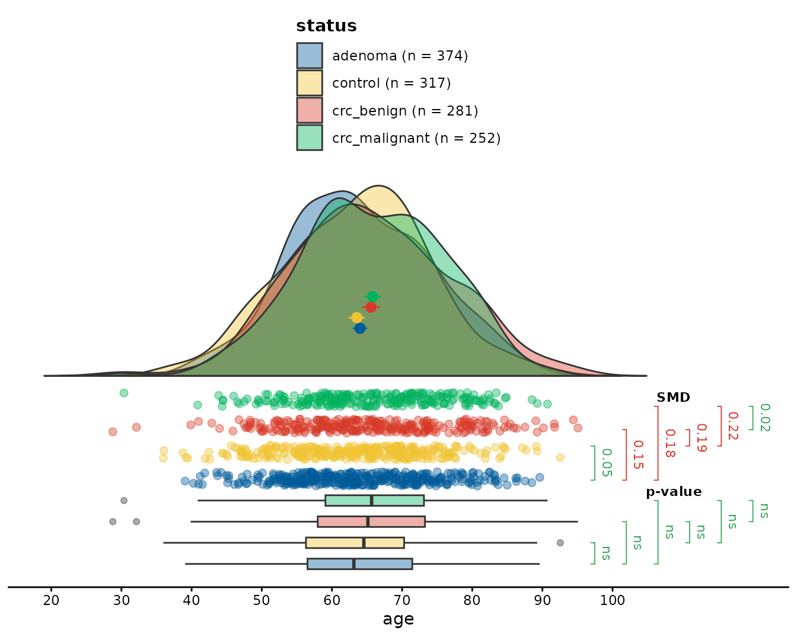
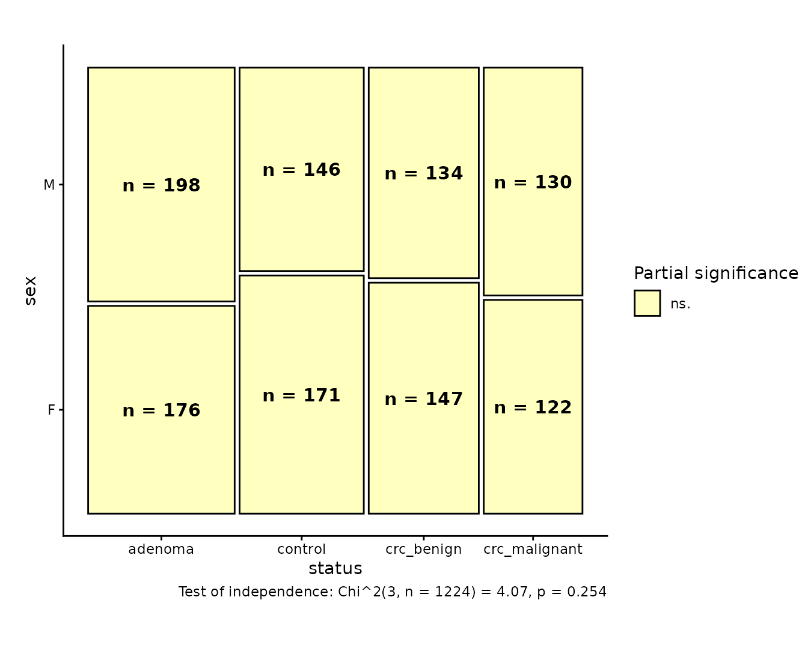
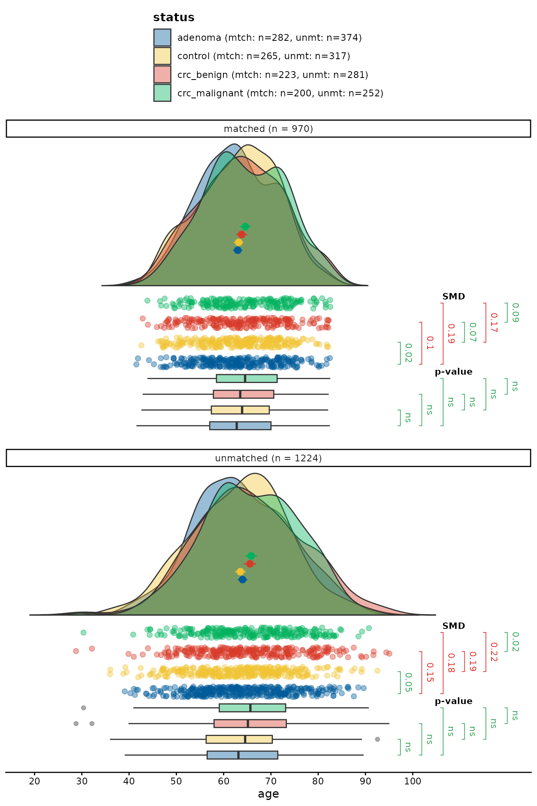
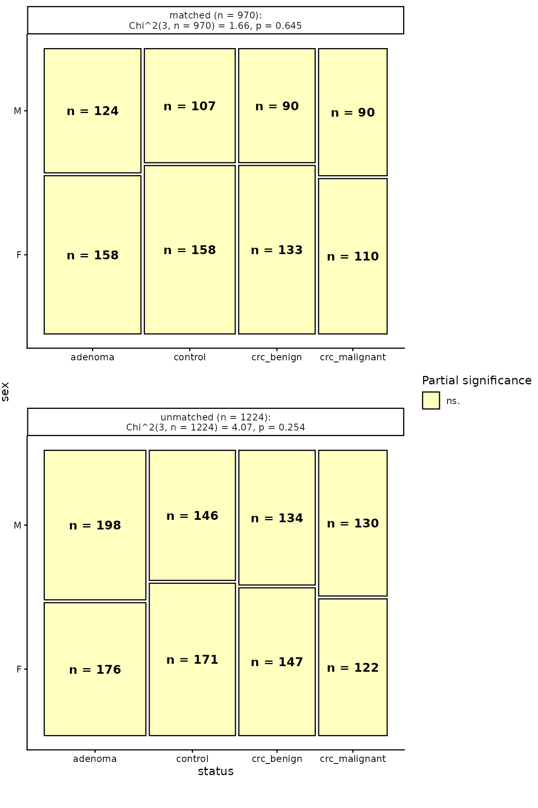

Matching Patients in the `cancer` Dataset with `vecmatch`
Source:vignettes/vecmatch.Rmd
vecmatch.RmdPractical Example of the Vector Matching Workflow
In this chapter, we will describe an exemplary data analysis of the
cancer dataset from the vecmatch package,
matching multiple cohorts based on selected covariates. The
vecmatch package follows a strict workflow based on the
vector matching algorithm defined by Lopez and
Gutman (2017), and it is
advisable to follow it. The whole process consists of five steps to
ensure the best possible matching quality using the vector matching
algorithm.
Step 1: Data Exploration and Initial Imbalance Assessment
The vecmatch package provides two graphical functions
for assessing initial dataset imbalance: raincloud() and
mosaic(). The raincloud() function is designed
for continuous variables, while mosaic() is for categorical
variables. Both functions allow grouping by up to two categorical
variables using the group and facet aesthetics
and compute various statistical summaries, including significance tests
and effect size coefficients.
In this example analysis, we focus on two predictor variables from
the cancer dataset: the discrete sex and the
continuous age. To evaluate differences in age across
status groups, we can use the raincloud()
function as follows:
library(vecmatch)
library(ggplot2)
raincloud(cancer,
age,
status,
significance = "t_test",
sig_label_color = TRUE,
sig_label_size = 3,
limits = c(10, 120)
) +
scale_y_continuous(breaks = seq(10, 100, 10))
This plot presents the conditional distribution of age
across different status groups. The standardized mean
differences (SMD) are represented by the brackets on the right side of
the jittered point plot. The results of the Student’s t-tests are
displayed alongside the boxplots on the right, providing insights into
the statistical significance of the differences in age
between the groups.
Similarly, we can evaluate the differences in the sex
variable using the mosaic() function. The code snippet
below demonstrates this:
mosaic(cancer,
status,
sex,
group_counts = TRUE,
significance = TRUE
)
The plot shows the conditional distribution of sex
across different status groups. The counts for all groups
are displayed inside the corresponding boxes, representing each subgroup
within the mosaic plot. Partial significance is visually coded through
color filling aesthetics. The labels provide the results of the
Chi-squared test of independence, summarizing the statistical assessment
of the relationship between the sex and status
variables.
Based on the plots, we can observe some imbalance in the
age and sex variables. However, in both cases,
the differences between the status groups appear to be
rather moderate. All Student’s t-tests, adjusted for multiple
comparisons, resulted in statistically insignificant differences in mean
age values between the groups. Additionally, 2 out of the 6 calculated
standardized mean differences (SMDs) fell below the 0.10 threshold,
indicating relatively small differences.
After a closer examination of the mean age values, we can notice that they form two separate clusters. The first cluster includes controls and patients with adenomas, who tend to be younger, while the second cluster consists of patients with benign and malignant colorectal cancer, who are generally older. The primary objective of the matching process will then be to align these two clusters, ensuring they have a common mean age value.
There were no significant differences in the sex
distributions across the status groups, as the overall
Chi-square test of independence was insignificant. All partial
significance tests were statistically insignificant, indicating small
values of standardized Pearson’s residuals.
Given the relatively small differences between the
status groups, the vector matching algorithm is expected to
produce satisfactory results.
Step 2: Estimation of Generalized Propensity Scores
The next step in the vector matching algorithm is the calculation of
generalized propensity scores (GPS) for the treatment variable. These
scores represent the treatment assignment probabilities and are based on
user-defined covariates. The relationship between the treatment variable
and predictors can be easily defined using R-specific
formula notation, allowing for both additive and interaction
effects.
The vecmatch package provides a straightforward method
for calculating the GPS-matrix with different methods using the
estimate_gps() function. However, custom approaches can
also be applied within the vector-matching workflow. The GPS-matrix used
in subsequent analyses must have the exact same structure as the output
of estimate_gps, containing the treatment variable and the
treatment assignment probabilities for each level of the treatment
variable. Importantly, the probabilities for each row in the GPS-matrix
must sum to 1. The resulting data.frame has to be of class
gps.
In the following example, we will use a simple formula with
age and sex as predictors, allowing for an
interaction effect. The method used to estimate the generalized
propensity scores (GPS) will be a multinomial logistic regression, which
can handle multiple levels of the treatment variable. The code for
estimating the GPS using the multinomial logistic regression model is as
follows:
formula_cancer <- status ~ age * sex
gps_matrix <- estimate_gps(formula_cancer,
cancer,
method = "multinom",
reference = "control"
)
head(gps_matrix, 7)
#> gps object (generalized propensity scores)
#> • Number of units: 7
#> • Number of treatments: 4
#> • Treatment column: treatment
#> • GPS probability columns: control, adenoma, crc_benign, crc_malignant
#> • Treatment levels: control, adenoma, crc_benign, crc_malignant
#> • All columns except 'treatment' store probabilities in [0, 1].
#>
#> treatment control adenoma crc_benign crc_malignant
#> 1 control 0.3050838 0.3254835 0.2074179 0.1620149
#> 2 control 0.2367189 0.3264350 0.2217444 0.2151016
#> 3 control 0.2242229 0.3238480 0.2290992 0.2228299
#> 4 control 0.2796174 0.2875377 0.2373547 0.1954901
#> 5 control 0.3200282 0.3335474 0.1772439 0.1691805
#> 6 control 0.3310855 0.3689677 0.1730250 0.1269219
#> 7 control 0.2647639 0.2668865 0.2534869 0.2148627Step 3: Calculating Common Support Region Borders
To remove observations that are not eligible for further matching,
the borders of the common support region (CSR) must be calculated. The
csregion() function facilitates this process by taking the
gps_matrix object as its sole argument. It computes the CSR
borders and automatically filters the input gps_matrix to
include only the observations that fall within the calculated CSR
borders.
The function returns an object of class csr_matrix,
which contains the filtered data along with several additional
attributes. These attributes enable users to manually filter the initial
gps_matrix or access a summary of the CSR border
calculation as a data.frame object. The
csregion() function can be used as follows:
csr_matrix <- csregion(gps_matrix)We can then compare the dimensions of the original
gps_matrix and the filtered csr_matrix.
Clearly, 24 observations have been filtered out of the original matrix.
Next, as recommended by Lopez and Gutman (2017), the GPS can be recalculated using only the data within the CSR. However, in our experience, this additional step does not result in a significant improvement in matching quality, especially if the number of observations that fall outside of the CSR is relatively small in comparison to the whole dataset size. Therefore, we decided to bypass this step and proceed with matching directly on the filtered dataset.
Step 4: k-Means Clustering and Matching
The most crucial step of the vector matching algorithm is the
k-means clustering and subsequent matching within the resulting
clusters. This approach ensures that only observations with similar GPS
vectors are matched, thereby justifying the name vector
matching. The core components of this step are the
stats::kmeans() function ( Core Team 2024), which performs
clustering, and the Matching::Matchby() or
optmatch::fullmatch() functions Hansen and Klopfer (2006), which match observations
within each k-means cluster. These functionalities are combined
into a single function named match_gps().
The match_gps() function takes the
csr_matrix as input and returns a matched dataset. The
matching process can be customized using various arguments, and it is
advisable to experiment with different parameter combinations to
optimize both matching quality and the number of matched samples (see
appendix ). For the replicability of results, it is also crucial to set
the random number generator seed before running the clustering and
matching procedures. This ensures that the clustering assignments and
matches are consistent across different runs of the analysis, allowing
others to reproduce the results exactly.
The match_gps() function can be used as follows:
Step 5: Post-Matching Quality Assessment
The vecmatch package provides a dedicated function,
balqual(), to assess the quality of post-matching results.
This function compares various metrics and statistical summaries between
the pre- and post-matching datasets, using a user-defined formula to
evaluate balance. Its usage is straightforward and requires only the
matched dataset (produced by match_gps()) and the formula
used for the calculation of the GPS:
balqual(matched_cancer,
formula_cancer,
type = "smd",
statistic = "max",
round = 4
)
#>
#> Matching Quality Evaluation
#> ================================================================================
#>
#> Count table for the treatment variable:
#> --------------------------------------------------
#> Treatment | Before | After
#> --------------------------------------------------
#> adenoma | 373 | 282
#> control | 313 | 265
#> crc_benign | 271 | 223
#> crc_malignant | 247 | 200
#> --------------------------------------------------
#>
#>
#> Matching summary statistics:
#> ----------------------------------------
#> Total n before matching: 1204
#> Total n after matching: 970
#> % of matched observations: 80.56 %
#> Total maximal SMD value: 0.1887
#>
#>
#> Maximal values :
#> --------------------------------------------------------------------------------
#> Variable | Coef | Before | After | Quality
#> --------------------------------------------------------------------------------
#> age | SMD | 0.2150 | 0.1887 | Not Balanced
#> sexF | SMD | 0.1480 | 0.0931 | Balanced
#> sexM | SMD | 0.1480 | 0.0931 | Balanced
#> age:sexF | SMD | 0.1548 | 0.0898 | Balanced
#> age:sexM | SMD | 0.1591 | 0.1037 | Not Balanced
#> --------------------------------------------------------------------------------The metrics above summarize pairwise comparisons between the
treatment levels. To additionally compare the marginal distributions of
the covariates between the unmatched and the matched dataset, add
desc_full to the type argument. Numeric
covariates are summarized by N, the mean, standard
deviation, minimum, quartiles, median, maximum, skewness and excess
kurtosis, while categorical covariates are cross-tabulated by the count
and percentage of each level. Both are reported within every treatment
level and are printed as two separate tables which, like the balance
tables above, carry the statistics in the rows and the two matching
stages in the Before and After columns:
balqual(matched_cancer,
formula_cancer,
type = c("smd", "desc_full"),
statistic = "max",
round = 4
)
#>
#> Matching Quality Evaluation
#> ================================================================================
#>
#> Count table for the treatment variable:
#> --------------------------------------------------
#> Treatment | Before | After
#> --------------------------------------------------
#> adenoma | 373 | 282
#> control | 313 | 265
#> crc_benign | 271 | 223
#> crc_malignant | 247 | 200
#> --------------------------------------------------
#>
#>
#> Matching summary statistics:
#> ----------------------------------------
#> Total n before matching: 1204
#> Total n after matching: 970
#> % of matched observations: 80.56 %
#> Total maximal SMD value: 0.1887
#>
#>
#> Maximal values :
#> --------------------------------------------------------------------------------
#> Variable | Coef | Before | After | Quality
#> --------------------------------------------------------------------------------
#> age | SMD | 0.2150 | 0.1887 | Not Balanced
#> sexF | SMD | 0.1480 | 0.0931 | Balanced
#> sexM | SMD | 0.1480 | 0.0931 | Balanced
#> age:sexF | SMD | 0.1548 | 0.0898 | Balanced
#> age:sexM | SMD | 0.1591 | 0.1037 | Not Balanced
#> --------------------------------------------------------------------------------
#>
#> Descriptive statistics of the continuous covariates:
#> --------------------------------------------------------
#> Variable | Group | Statistic | Before | After
#> --------------------------------------------------------
#> age | adenoma | N | 373 | 282
#> age | adenoma | Mean | 63.9359 | 62.9839
#> age | adenoma | SD | 10.0129 | 8.368
#> age | adenoma | Min | 39.0788 | 41.5359
#> age | adenoma | Q1 | 56.491 | 57.0566
#> age | adenoma | Median | 63.0986 | 62.7616
#> age | adenoma | Q3 | 71.3762 | 70.0099
#> age | adenoma | Max | 89.6203 | 82.4682
#> age | adenoma | Skewness | 0.1038 | 0.0111
#> age | adenoma | Kurtosis | -0.4251 | -0.5377
#> age | control | N | 313 | 265
#> age | control | Mean | 63.7051 | 63.185
#> age | control | SD | 9.8932 | 8.3318
#> age | control | Min | 39.2 | 42.594
#> age | control | Q1 | 56.6697 | 57.4042
#> age | control | Median | 64.5738 | 63.9048
#> age | control | Q3 | 70.2905 | 69.6532
#> age | control | Max | 89.2571 | 82.1037
#> age | control | Skewness | -0.0101 | -0.1712
#> age | control | Kurtosis | -0.3284 | -0.6026
#> age | crc_benign | N | 271 | 223
#> age | crc_benign | Mean | 65.2431 | 63.8124
#> age | crc_benign | SD | 10.0518 | 8.9352
#> age | crc_benign | Min | 39.8699 | 42.8761
#> age | crc_benign | Q1 | 58.0628 | 57.8345
#> age | crc_benign | Median | 64.8065 | 63.5093
#> age | crc_benign | Q3 | 73.0519 | 70.6025
#> age | crc_benign | Max | 87.5219 | 82.22
#> age | crc_benign | Skewness | 0.0774 | -0.0091
#> age | crc_benign | Kurtosis | -0.6851 | -0.6223
#> age | crc_malignant | N | 247 | 200
#> age | crc_malignant | Mean | 65.7584 | 64.5901
#> age | crc_malignant | SD | 9.5506 | 8.5123
#> age | crc_malignant | Min | 43.8724 | 43.8724
#> age | crc_malignant | Q1 | 59.15 | 58.479
#> age | crc_malignant | Median | 65.6405 | 64.5361
#> age | crc_malignant | Q3 | 73.0273 | 71.311
#> age | crc_malignant | Max | 84.8777 | 82.569
#> age | crc_malignant | Skewness | -0.0752 | -0.0256
#> age | crc_malignant | Kurtosis | -0.7084 | -0.6706
#> --------------------------------------------------------
#>
#> Distribution of the categorical covariates:
#> ------------------------------------------------------------
#> Variable | Group | Level | Before | After
#> ------------------------------------------------------------
#> sex | adenoma | F | 175 (46.9%) | 158 (56.0%)
#> sex | adenoma | M | 198 (53.1%) | 124 (44.0%)
#> sex | control | F | 170 (54.3%) | 158 (59.6%)
#> sex | control | M | 143 (45.7%) | 107 (40.4%)
#> sex | crc_benign | F | 142 (52.4%) | 133 (59.6%)
#> sex | crc_benign | M | 129 (47.6%) | 90 (40.4%)
#> sex | crc_malignant | F | 119 (48.2%) | 110 (55.0%)
#> sex | crc_malignant | M | 128 (51.8%) | 90 (45.0%)
#> ------------------------------------------------------------If the full table is longer than comfortable,
desc_reduced restricts the summary of the numeric
covariates to N, the minimum, mean, median and maximum. The
cross-tabulation of the categorical covariates is unaffected:
balqual(matched_cancer,
formula_cancer,
type = c("smd", "desc_reduced"),
statistic = "max",
round = 4
)
#>
#> Matching Quality Evaluation
#> ================================================================================
#>
#> Count table for the treatment variable:
#> --------------------------------------------------
#> Treatment | Before | After
#> --------------------------------------------------
#> adenoma | 373 | 282
#> control | 313 | 265
#> crc_benign | 271 | 223
#> crc_malignant | 247 | 200
#> --------------------------------------------------
#>
#>
#> Matching summary statistics:
#> ----------------------------------------
#> Total n before matching: 1204
#> Total n after matching: 970
#> % of matched observations: 80.56 %
#> Total maximal SMD value: 0.1887
#>
#>
#> Maximal values :
#> --------------------------------------------------------------------------------
#> Variable | Coef | Before | After | Quality
#> --------------------------------------------------------------------------------
#> age | SMD | 0.2150 | 0.1887 | Not Balanced
#> sexF | SMD | 0.1480 | 0.0931 | Balanced
#> sexM | SMD | 0.1480 | 0.0931 | Balanced
#> age:sexF | SMD | 0.1548 | 0.0898 | Balanced
#> age:sexM | SMD | 0.1591 | 0.1037 | Not Balanced
#> --------------------------------------------------------------------------------
#>
#> Descriptive statistics of the continuous covariates:
#> --------------------------------------------------------
#> Variable | Group | Statistic | Before | After
#> --------------------------------------------------------
#> age | adenoma | N | 373 | 282
#> age | adenoma | Min | 39.0788 | 41.5359
#> age | adenoma | Mean | 63.9359 | 62.9839
#> age | adenoma | Median | 63.0986 | 62.7616
#> age | adenoma | Max | 89.6203 | 82.4682
#> age | control | N | 313 | 265
#> age | control | Min | 39.2 | 42.594
#> age | control | Mean | 63.7051 | 63.185
#> age | control | Median | 64.5738 | 63.9048
#> age | control | Max | 89.2571 | 82.1037
#> age | crc_benign | N | 271 | 223
#> age | crc_benign | Min | 39.8699 | 42.8761
#> age | crc_benign | Mean | 65.2431 | 63.8124
#> age | crc_benign | Median | 64.8065 | 63.5093
#> age | crc_benign | Max | 87.5219 | 82.22
#> age | crc_malignant | N | 247 | 200
#> age | crc_malignant | Min | 43.8724 | 43.8724
#> age | crc_malignant | Mean | 65.7584 | 64.5901
#> age | crc_malignant | Median | 65.6405 | 64.5361
#> age | crc_malignant | Max | 84.8777 | 82.569
#> --------------------------------------------------------
#>
#> Distribution of the categorical covariates:
#> ------------------------------------------------------------
#> Variable | Group | Level | Before | After
#> ------------------------------------------------------------
#> sex | adenoma | F | 175 (46.9%) | 158 (56.0%)
#> sex | adenoma | M | 198 (53.1%) | 124 (44.0%)
#> sex | control | F | 170 (54.3%) | 158 (59.6%)
#> sex | control | M | 143 (45.7%) | 107 (40.4%)
#> sex | crc_benign | F | 142 (52.4%) | 133 (59.6%)
#> sex | crc_benign | M | 129 (47.6%) | 90 (40.4%)
#> sex | crc_malignant | F | 119 (48.2%) | 110 (55.0%)
#> sex | crc_malignant | M | 128 (51.8%) | 90 (45.0%)
#> ------------------------------------------------------------Note that the descriptive tables describe the covariates as they
appear in the formula, whereas the balance metrics are
computed on the model matrix. sex is therefore described
once by its levels rather than once per dummy-coded column, and the
age:sex interaction is covered by the balance metrics only,
as it is a model term rather than a covariate.
After assessing the quality with balqual(), we can
combine both matched and unmatched datasets into a single data frame to
visualize age and sex using raincloud() and
mosaic():
matched_cancer$dataset <- "matched"
unmatched_cancer <- cancer
unmatched_cancer$dataset <- "unmatched"
data_full <- rbind(matched_cancer, unmatched_cancer)
raincloud(data_full,
age,
status,
dataset,
significance = "t_test",
sig_label_color = TRUE,
sig_label_size = 3,
limits = c(10, 120)
) +
scale_y_continuous(breaks = seq(10, 100, 10))
mosaic(data_full,
status,
sex,
dataset,
group_counts = TRUE,
significance = TRUE
)